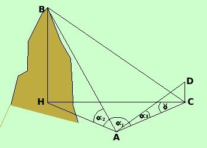
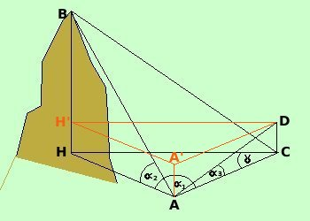

|
 Se la base di riferimento AD non e' orizzontale prima calcolo una base di riferimento orizzontale AC con il teorema delle proiezioni: AC = AD cos poi lo adatto alla formula precedente
 Si potrebbe obiettare che in questo caso e' difficile indiviguare l'angolo ACH cioe' comunque possiamo sempre considerare il triangolo DA'H' e calcolarrne gli angoli e siccome il triangolo DA'H' e' congruente al triangolo DAH possiamo calcolare facilmente l'angolo |